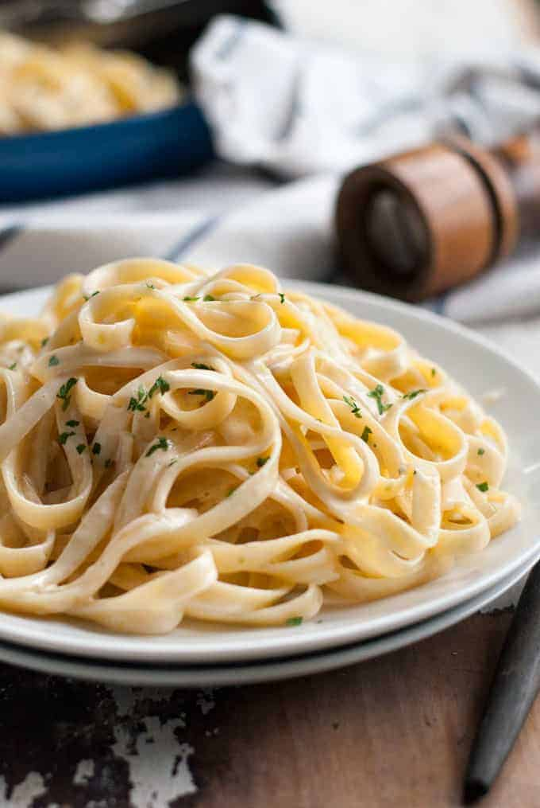

Fettuccine Alfredo

Description
Who doesn't love a classic fettuccine alfredo? This recipe is creamy and indulgent, with a twist! Would you
believe it's only 420 calories per serving? That is because the sauce is emulsified using the starchy pasta
water, creating a smooth creamy sauce that clings to the pasta.
From Recipe Tin Eats: Fettuccine Alfredo
Ingredients
- 8 oz dried fettuccine
- 3 tbsp unsalted butter
- 1 small shallot
- 1/2 cup heavy cream
- 3/4 cup freshly grated Parmigiano Reggiano
- 1/4 tsp salt
- Good grind of black pepper
Steps
- Bring a large pot of salted water to boil. Add the fettuccine and cook until al dente (still firm but just
cooked through).
- Meanwhile, melt the butter in a deep fry pan over medium high heat.
- Add the shallots and sauté for 2 minutes or until tender.
- Add the cream and bring to boil. Turn heat down to medium low and simmer for 3 minutes.
- Remove the fry pan from the heat and stir through the Parmigiano Reggiano, salt and pepper until the sauce
is smooth.
- TAKE OUT 1/4 cup of pasta water PLUS scoop out an extra mug (extra, just in case). Then drain the pasta in a
colander.
- Transfer the pasta and 1/4 cup of reserved pasta water into the fry pan with the sauce. Return the fry pan
to the stove over medium high heat. Toss very gently to coat the pasta in the sauce and allow the sauce to
emulsify for 1 minute.
- Remove from the stove and serve immediately, garnished with extra Parmigiano Reggiano and fresh parsley, if
using.
Return to Home Page